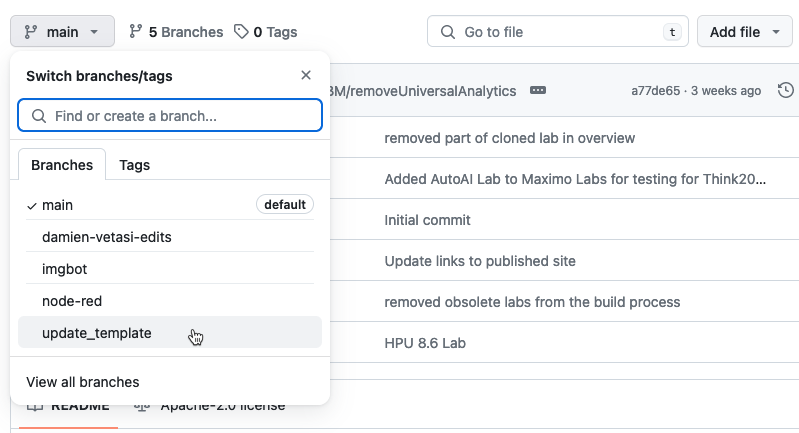
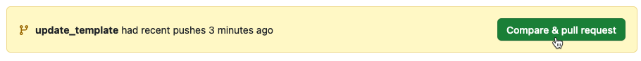

Add Content to existing lab
Before starting to add or change existing content, create a branch for the changes.
You can get a brief introduction to the use of branches here:
https://github.com/Kunena/Kunena-Forum/wiki/Create-a-new-branch-with-git-and-manage-branches
1. Prepare your Git branch
Basically you need to do the following to create a new branch locally and on the Github repo:
git pull
git checkout -b [name_of_your_new_branch]
git push origin [name_of_your_new_branch]
2. Make changes
Note
If you are making a new lab, then jump over to "Make first changes for new lab"
on Create new lab.
Locate the labs folder under the MkDocs folder, e.g. /MkDocs/edc_8.11
Make the changes in the markdown files, image files, and mkdocs.yml file.
Remember to do this:
Update the release_notes.md file with Contributors and Change Information.
Update the index.md file with a new Updated date (at the end of the file).
In the terminal navigate to the root of this git repo and execute the build script:
./build_all_mkdocs.sh
Open the browser and navigate to http://localhost:8080/ in order to verify that your changes look as expected.
Tip
Press control-c to stop the web server and get back to the prompt.
3. Commit and push your changes
When you are satisfied with your contribution take a look at the changes you have created in git:
git status
Add those files to git:
git add .
Commit the changes:
git commit -sm "Write a descriptive message of your changes"
Remember to do this:
It is important to use the -sm switch on the commit command, as the s signs the commit which is needed to merge your changes into the main branch later on.
Push the changes to the Github branch:
git push origin [name_of_your_new_branch]
Note
Repeate step 2 and 3 until you have fulfilled the purpose of your branch.
4. Create Pull request
Go to the Github repository https://github.com/IBM/maximo-labs
Select your branch in the dropdown box: 
Create a Pull request: 
Give it a title and description. Hit the Create pull request button.
Remember to do this:
Ask Carlos Ferreia (carlos.ferreira1@ibm.com) or one of the repository administrators to review and accept your Pull Request.
5. Clean up branches locally and remotely (Github)
Once the Pull Request has been accepted and your commits are added to the main branch, it is time to clean up the branch locally and remotely (on Github).
git switch main
git branch -d [name_of_your_new_branch]
git push origin :[name_of_your_new_branch]
git pull
Note
The : before the [name_of_your_new_branch] in the last command will delete it on Github.
You might get an error if the branch was deleted on Github after the Pull Request was merged to the main branch.
Thank you !
You have now contributed to Maximo Labs - Thank you very much :-)